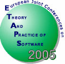

|

|
Fifth Workshop on Language Descriptions, Tools and
Applications
LDTA 2005
|
|
|
|
In Cooperation with ACM SIGPLAN
|
![[ACM]](Logos/acmlogo.gif)
|
|
|
April 3, 2005
Edinburgh, Scotland, UK
|
|
Scope
The aim of this one-day workshop is to bring together researchers from
academia and industry interested in the field of formal language
definitions and language technologies, with a special emphasis on
tools developed for or with these language definitions. This active
area of research involves the following basic approaches:
- Program analysis, transformation, and generation
- Formal analysis of language properties
- Automatic generation of language processing tools
For example, language definitions can be augmented in a manner so that
not only compilers or interpreters can be automatically generated but
also other tools such as syntax-directed editors, debuggers, partial
evaluators, test generators, documentation generators, etc. Although
various specification formalisms like attribute grammars, action
semantics, operational semantics, and algebraic approaches have been
developed, they are not widely exploited in current practice.
It is the aim of the LDTA workshops to bridge this gap between theory
and practice. Among others, the following application domains can
benefit from advanced language technologies:
- Software component models and modeling languages
- Re-engineering and re-factoring
- Aspect-oriented programming
- Domain-specific languages
- XML processing
- Visualization and graph transformation
-
Programming environments such as Eclipse, .net, Rotor, SUN Java,
etc.
The workshop welcomes contributions on all aspects of formal language
definitions, with special emphasis on applications and tools developed
for or with these language definitions.
Workshop Programme
The programme can be found
here.
Registration
Registration to this workshop is handled via the
central
ETAPS registration procedure. We encourage all LDTA
participants to also register for the ETAPS workshop dinner on April 3.
Submission Procedure and Publication
Submission will be open from autumn 2004. Papers (of at most 15 pages)
should be submitted electronically as (optionally compressed/gzipped)
PostScript or PDF files to one of the program committee chairs,
John Boyland or
Görel Hedin. The
message should also contain a text-only abstract and contact author
information.
Please use the ENTCS style
(generic
package and
special LDTA 2005 macros) for preparing your submission.
Author's instructions are available on the ENTCS Macro Home Page
http://www.math.tulane.edu/~entcs/.
Final versions of accepted papers must not exceed 20 pages and have to
conform to the proceedings style. The final versions of
accepted papers will be published in Electronic Notes in Theoretical
Computer Science (ENTCS), Elsevier Science, and will be made
available during the workshop.
The authors of the best papers will be invited to write a journal
version of their paper which will be separately reviewed and, assuming
acceptance, be published in a special issue devoted to LDTA 2005 of the
journal Science of
Computer Programming (Elsevier Science).
LDTA 2005 also welcomes submissions of short tool demo papers of at
most four pages. Please use the same style files as for the regular papers. The
paper should contain a brief description of the tool and include a section
that clearly explains what will be demonstrated. Send the title and abstract
on December 1 at the latest, and the complete four page paper on December 8 at
the latest.
Important Dates
|
Submission deadline:
|
December 1, 2004
|
|
Notification:
|
January 17, 2005
|
|
Final version due:
|
February 15, 2005
|
|
Workshop:
|
April 3, 2005
|
Program Committee
-
John Boyland,
University of Wisconsin-Milwaukee, USA (co-chair)
-
Görel Hedin,
Lund Institute of Technology, Sweden (co-chair)
-
Shigero Chiba, Tokyo Institute of Technology, Japan
-
Jim Cordy, Queen's University, Kingston, Canada
-
Susan L. Graham, University of California, Berkeley, USA
-
Adrian Johnstone, University of London, UK
-
Paul Klint, CWI, Amsterdam, The Netherlands
-
Jens Knoop, Vienna University of Technology, Austria
-
Eric Madelaine, INRIA, Sophia Antipolis, France
-
Arnd Poetzsch-Heffter, University of Kaiserslautern, Germany
-
Ganesh Sittampalam, Oxford University, UK
-
Anthony Sloane, Macquarie University, Sydney, Australia
-
Doaitse Swierstra, Utrecht University, The Netherlands
-
Kris de Volder, University of British Columbia, Vancouver,
Canada
-
Andrew Wendelborn, University of Adelaide, Australia
Organizing Committee
History
LDTA 2005 is the fifth instance of a series of succesful ETAPS
satellite events:
-
2001
(Genova, Italy)
-
2002
(Grenoble, France)
-
2003
(Warsaw, Poland)
-
2004
(Barcelona, Spain)
The workshop emerged from the Workshops on Attribute Grammars
and their Applications (WAGA'90, Paris; SAGA'91, Prague, WAGA'99,
Amsterdam, and
WAGA'00,
Ponte de Lima) and from the ASF+SDF Workshops (ASF+SDF'95 and
ASF+SDF'97, both in Amsterdam).